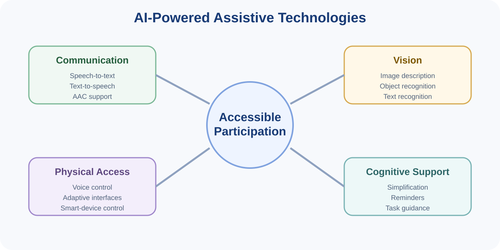
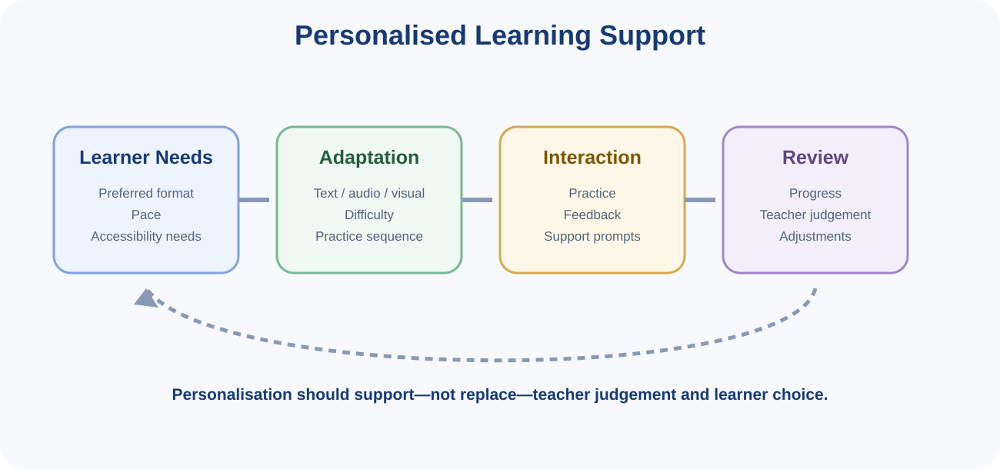
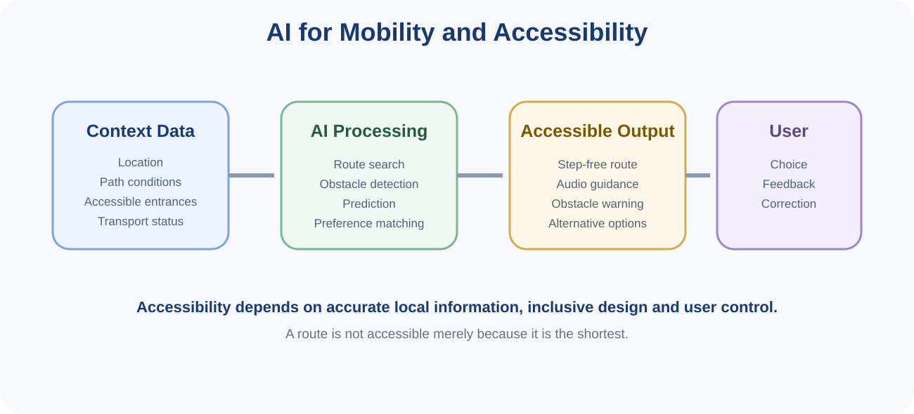
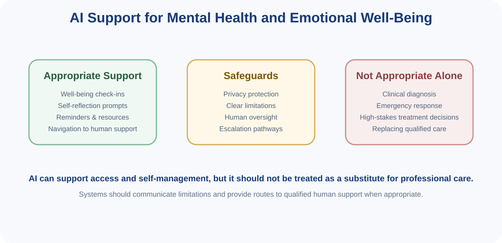

You can read these notes on screen or use the button below to print or save them as PDF.
8.1
Contemporary Issues in AI
This topic focuses on selected contemporary applications of Artificial Intelligence in accessibility, disability support, education, mobility and emotional well-being. The aim is not to survey every new AI development, but to examine how AI can support participation and independence when systems are designed around real user needs.
Core question: Does the technology make participation easier, safer and more inclusive for the person using it?
8.2
AI-Powered Assistive Technologies for People with Disabilities
Assistive technology refers to products or systems that help people perform activities that might otherwise be difficult or impossible. AI can extend assistive technologies by recognising speech, interpreting images, adapting interfaces and generating personalised support.

Figure 1. AI can support communication, vision, physical access and cognitive participation.
Communication support
speech-to-text captions for people who are deaf or hard of hearing;
text-to-speech for people who cannot easily read visual text;
augmentative and alternative communication tools that help users express messages.
Vision support
image and scene description;
text recognition and reading aloud;
object or obstacle recognition;
navigation support using visual perception and location data.
Physical access
voice-controlled interfaces;
adaptive input methods;
predictive assistance for operating devices;
smart-home or smart-environment control.
Cognitive support
simplifying complex information;
task reminders and step-by-step guidance;
personalised prompts;
supporting planning, memory or routine management.
Assistive AI should be designed with the intended users, not merely for them. Accessibility needs vary widely, so one interface or model will not suit everyone.
8.3
Personalised Learning Systems for Students with Disabilities
AI can help educational systems adapt learning materials, practice activities and feedback to individual needs. For students with disabilities, this may include changes in presentation format, pace, difficulty or interaction method.

Figure 2. Personalised learning should combine adaptation with learner choice and teacher judgement.
Examples of adaptation
providing text, audio or visual alternatives;
adjusting reading complexity;
offering additional practice where a learner is struggling;
allowing more flexible pacing;
highlighting key information;
using accessible input and output formats.
Benefits
Personalised systems can reduce barriers, provide rapid feedback and make educational materials more usable for different learners.
Risks and limitations
over-personalisation may narrow what a learner is exposed to;
incorrect assumptions about a disability may lead to inappropriate adaptations;
sensitive learner data may create privacy risks;
teachers may over-rely on automated recommendations;
a learner should not lose control over how support is provided.
Main principle: Personalisation should support teachers and learners, not remove human judgement or learner choice.
8.4
AI in Mobility and Accessibility Solutions
Mobility systems can use AI to identify accessible routes, recognise obstacles, predict transport conditions and recommend alternatives. The shortest route is not always the most accessible route.

Figure 3. Accessible mobility depends on context data, AI processing, suitable outputs and user feedback.
Possible applications
step-free route planning;
navigation that accounts for ramps, lifts and accessible entrances;
audio or haptic navigation cues;
obstacle and hazard detection;
real-time transport accessibility information;
alternative-route recommendations when facilities are unavailable.
Why local context matters
A route planner is only as useful as its underlying data. If information about ramps, road surfaces, broken lifts or inaccessible entrances is missing or outdated, an apparently good recommendation may become unsafe or unusable.
User control
Users may have different mobility needs and preferences. A good system should allow people to choose what matters to them, for example avoiding stairs, reducing walking distance or preferring well-lit routes.
8.5
Mental Health Support and Emotional Well-Being with AI
AI can support some low-risk well-being activities, such as self-reflection prompts, reminders, general information and directing users towards appropriate human services. These systems require particular care because mental-health information is sensitive and incorrect advice can cause harm.

Figure 4. AI can provide supportive functions, but high-risk or clinical decisions require qualified human care.
Appropriate supportive uses
general well-being check-ins;
journalling or self-reflection prompts;
reminders for healthy routines;
providing information about support services;
helping users navigate available counselling or care options.
Important boundaries
AI should not be treated as a substitute for a qualified mental-health professional;
high-risk situations require clear routes to appropriate human support;
the system should communicate its limitations clearly;
sensitive personal information should be handled carefully;
automated systems should avoid presenting uncertain outputs as clinical diagnosis.
Safety principle: Systems supporting emotional well-being should know when not to act alone. Escalation to qualified human support can be a design requirement, not a system failure.
8.6
Design Principles for Inclusive AI
Design with users. Include people with relevant lived experience in requirements and testing.
Provide alternatives. Avoid relying on only one interaction mode.
Preserve user choice. Allow users to accept, reject or modify AI recommendations where possible.
Test across diverse users and contexts. Accessibility should be evaluated, not assumed.
Protect sensitive data. Disability and health-related information may require especially careful handling.
Communicate limitations. Users should understand what the system can and cannot do.
Maintain human support. High-impact or safety-critical decisions should have appropriate human involvement.
Main lesson: The value of contemporary AI is not simply that it is technically advanced. Its value depends on whether it expands access, autonomy and participation without introducing unacceptable risk.
8.7
Topic 8 Checklist
Can you identify major types of AI-powered assistive technology?
Can you explain how AI may personalise learning for students with disabilities?
Can you explain why accessibility-aware route planning differs from shortest-path planning?
Can you identify appropriate and inappropriate uses of AI for emotional well-being?
Can you explain why user participation and control matter in inclusive AI design?
Can you propose practical safeguards for accessibility-focused AI systems?